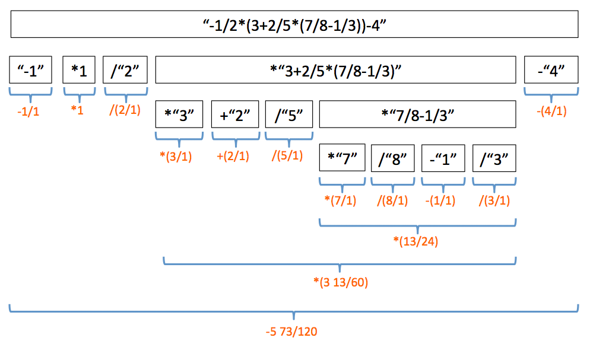

The SCL library is capable of storing objects of any type, but it does not expect any specific behaviour from them. Polymorphism becomes much more interesting when the objects of unspecified form are expected to provide certain functionality. This is where protocols become extremely useful, as they allow definition of the behaviour that generic types are expected to provide. In this part of the lab, you will be given a Parser class that is capable of evaluating mathematical expressions. The evaluation can be customised by providing the class capable of reading number values from strings. The provided class will need to implement methods of newly defined protocol. In this lab, you will modifying Fraction class and Complex class from Lab 3 to conform to that protocol.
Parser
Create new Xcode project, name it prog5.2. The code for the Parser is given below. Do not type this one out—it's quite long and complex. Click on the file link at the top of the box, download it and add to your project. Some of the file content in the box is highlighted. In this particular case, the highlighted parts are not meant to mark additions to the code. The contents of the entire file are given, some parts are made to stand out to aid the discussion that will follow.
001: 002: 003: 004: 005: 006: 007: 008: 009: 010: 011: 012: 013: 014: 015: 016: 017: 018: 019: 020: 021: 022: 023: 024: 025: 026: 027: 028: 029: 030: 031: 032: 033: 034: 035: 036: 037: 038: 039: 040: 041: 042: 043: 044: 045: 046: 047: 048: 049: 050: 051: 052: 053: 054: 055: 056: 057: 058: 059: 060: 061: 062: 063: 064: 065: 066: 067: 068: 069: 070: 071: 072: 073: 074: 075: 076: 077: 078: 079: 080: 081: 082: 083: 084: 085: 086: 087: 088: 089: 090: 091: 092: 093: 094: 095: 096: 097: 098: 099: 100: 101: 102: 103: 104: 105: 106: 107: 108: 109: 110: 111: 112: 113: 114: 115: 116: 117: 118: 119: 120: 121: 122: 123: 124: 125: 126: 127: 128: 129: 130: 131: 132: 133: 134: 135: 136: 137: 138: 139: 140: 141: 142: 143: 144: 145: 146: 147: 148: 149: 150: 151: 152: 153: 154: 155: 156: 157: 158: 159: 160: 161: 162: 163: 164: 165: 166: 167: 168: 169: 170: 171: 172: 173: 174: 175: 176: 177: 178: 179: 180: 181: 182: 183: 184: 185: 186: 187: 188: 189: 190: 191: 192: 193: 194: 195: 196: 197: 198: 199: 200: 201: 202: 203: 204: 205: 206: 207: 208: 209: 210: 211: 212: 213: 214: 215: 216: 217: 218: 219: 220: 221: 222: 223: 224: 225: 226: 227: 228: 229: 230: 231: 232: 233: 234: 235: 236: 237: 238: 239: 240: 241: 242: 243: 244: 245: 246: 247: 248: 249: 250: 251: 252: 253: 254: 255: 256: 257: 258: 259: 260: 261: 262: 263: 264: 265: 266: 267: 268: 269: 270: 271: 272: 273: 274: 275: 276: 277: 278: 279: 280: 281: 282: 283: 284: 285: 286: 287: 288: 289: 290: 291: 292: 293: 294: 295: 296: 297: 298: 299: 300: 301: 302: 303: 304: 305: 306: 307: 308: 309: 310: 311: 312: 313: 314: 315: 316: 317: 318: 319: 320: 321: 322: 323: 324: 325: 326: 327: 328: 329: 330: 331: 332: 333: 334: 335: 336: 337: 338: 339: 340: 341: 342: 343: 344: 345: 346: 347: 348: 349: 350: 351: 352: 353: 354: 355: 356: 357: 358: 359: 360: 361: 362: 363: 364: 365: 366: 367: 368: 369: 370: 371: 372: 373: 374: 375: 376: 377: 378: 379: 380: 381: 382: 383: 384:
import Foundation /** Protocol for an object that represents a number with a function that can convert string to that number and has the +, -, * and / operations defined between two numer objects */ protocol StringConvertibleNum { static func readFromString(_: String) -> Self? static func +(_: Self, _: Self) -> Self static func -(_: Self,_: Self) -> Self static func *(_: Self,_: Self) -> Self static func /(_: Self,_: Self) -> Self } /** Parser for string expressions with fraction calculations Supports +, -, *, and / operations */ class Parser<T: StringConvertibleNum> { // Type alias for operation and string tuple typealias TokenStr = (op: Character, token: String) // Type alias for operation and fraction tuple typealias TokenVal = (op: Character, token: T) /** Check whether a character corresponds to mathematical operation symbol :param: ch Character to check - returns: Bool True if character is +,-,/, or *, false otherwise */ private static func isAnOperation(ch: Character) -> Bool { if ch == "+" || ch == "-" || ch == "/" || ch == "*" { return true; } return false } /** Check whether a string contains a mathematical operation symbol anywhere aside from the first character :param: token String token to check - returns: Bool True if string token contains a mathematical operation symbol, false otherwise */ private static func containsOperation(token: String) -> Bool { var firstCh: Bool = true; for ch in token.characters { if firstCh { // Do not check the first character of // the string firstCh = false } else if isAnOperation(ch: ch) { return true; } } return false } /** Tokenises string expression into a set of tupples with mathematical operation and corresponding number string :param: exprStr Expression string to tokenize - returns: [TokenStr]? An optional array of TokenStr tuples, nil if parsing returns syntax error at any point */ private static func tokenise(exprStr: String) -> [TokenStr]? { // Next token and operation var newToken: String = "" var newOperation: Character = " " // Array of token string tuples to return var tokens: [TokenStr] = [] var firstParseChar: Bool = true; // Flag indicating whether operation symbol // must follow the last token var opMustFollow = false; // Flag indicating whether operation symbol // cannot follow the last token var opCannotFollow = true; // Count checking for bracket closure var bracketCount: Int = 0; // Walk through each character in the expression string for exprChar in exprStr.characters { // Skip whitespace if(exprChar == " ") { continue; } // If the first character in the expression string // is a "+" or "-", just treat it as // multiplication by positive or negative 1 if firstParseChar && (exprChar=="+" || exprChar=="-") { if exprChar == "-" { tokens += [(op: " ", token: String(exprChar) + "1")] newOperation = "*" } firstParseChar = false; continue; } firstParseChar = false // If the next parse character does not have to be // an operation, check for brackets if !opMustFollow { // If character is the open bracket, // increase bracket count if exprChar == "(" { // If it's the first opening bracket, it must // be at the beginning of the new token string if bracketCount == 0 && !newToken.isEmpty { return nil } bracketCount += 1 // The first open bracket // does not get added to the new token if(bracketCount == 1) { continue; } // Else if parse character is the close bracket, // decrease bracket count } else if exprChar == ")" { // If bracket count is already at zero // there is a syntax error - closing a // bracket that hasn't been open if(bracketCount == 0) { return nil; } bracketCount -= 1 // Last closing bracket // does not get added to the new token string // and operation must follow if(bracketCount == 0) { opMustFollow = true; continue } } } // If bracket count is at zero, check if the expression character // is an operation if bracketCount == 0 && isAnOperation(ch: exprChar) { // Next character is an operation if opCannotFollow || newToken.isEmpty { // If the flag for operation cannot follow is set or the // token string is empty (operation follows right after // an operation), then we have a parse error return nil } else { // Add a new tuple to the return token array tokens += [(op: newOperation, token: newToken)] // Reset the string token newToken = "" // Save the operation for next tuple newOperation = exprChar; // Reset operation must/cannot follow flags opMustFollow = false opCannotFollow = true } } else { // Next character is not an operation if opMustFollow { // If operation must follow, we got a // syntax error return nil } // Just add expression character to the // token string newToken.append(exprChar); // Operation can follow after a non-operation //character opCannotFollow = false } } // Add the remaining operation and the token string tokens += [(op: newOperation, token: newToken)] // Finished parsing the expression string, if bracket count // is not zero, we have a syntax error if bracketCount > 0 { return nil } else { return tokens } } /** Evaluates a string as a mathematical expression. :param: string String to evaluate :param: debug Flag indicating whether to print debug info :param: rcount Recursion count - used for indentation printing of debug info :return: Fraction? Result of evaluation the string, nil if syntax error */ private static func evaluate(string: String, debug: Bool, rcount: Int) -> T? { // Debug display if debug { print("dbg:", terminator: "") for _ in 0..<rcount { print("| ", terminator: "") } } // Check for base case if !containsOperation(token: string) { // There are no more mathematical operators within the string - // just evaluate the string to Fraction let result = T.readFromString(string) // Debug info if debug { if let f = result { print("evaluating number \(f)") } else { print("syntax error!") } } return result } else { // There are mathematical expressions within the string - // will parse the string and break it into substrings // and recursively evaluate each part // Break the string into string tokens separated // by mathematical symbols let tokensToParse: [TokenStr]? = Parser<T>.tokenise(exprStr: string); // Check if parsing retunred non-nil result if let tokens = tokensToParse { // Debug info about tokens found if debug { print("evaluating '\(string)'") for token in tokens { print("dbg:", terminator: "") for _ in 0..<rcount { print("| ", terminator: "") } print("found op:\(token.op), expr:\(token.token)") } } // Start converting strings to values var valuesToProcess: [TokenVal] = []; // Evaluate all tokens to numbers for token in tokens { // Recursive call to evaluate next token to a value if let val = self.evaluate(string: token.token, debug: debug, rcount: rcount+1) { // Debug info showing obtained value if debug { print("dbg:", terminator: "") for _ in 0..<rcount+1 { print("| ", terminator: "") } print("value: \(val)") } // Add the operator with the new value // to the parsed values array valuesToProcess += [(op: token.op,token: val)] } else { return nil } } // If no values were found, return nil if valuesToProcess.isEmpty { return nil } // The first value in the array should // came with no preceeding operation let firstToken = valuesToProcess[0] if firstToken.op != " " { return nil } // The * and / have precendence over + and // -, so first evaluate all the * and / // operators in the valuesToProcess array var i: Int = 1; while i < valuesToProcess.count { // Get the operation, the left operand // value and the right operand value let op = valuesToProcess[i].op let leftNum: T = valuesToProcess[i-1].token let rightNum: T = valuesToProcess[i].token // If the operations is a * or a /, then // perform multiplication or division, replacing // the left operand in the valuesToProcess with // the result, removing the right operand if op == "*" { valuesToProcess[i-1].token=leftNum * rightNum valuesToProcess.remove(at: i); } else if op == "/" { valuesToProcess[i-1].token=leftNum / rightNum valuesToProcess.remove(at: i); } else { i += 1; } } // Once multiplication and division is done, // it's time to do addition and subtraction. // The result is stored as a single result // value var result: T = valuesToProcess[0].token for i in 1..<valuesToProcess.count { let token = valuesToProcess[i] let num: T = token.token // Check if the operation on the next // token is + or - and perform // addition or subtraction on // the final result and the next token if token.op == "+" { result = result + num; } else if(token.op == "-") { result = result - num; } else { // Do not expect any other operations // at this point, aside from + and -, // so if something else is found, // return nil return nil } // Debug display of the final result if debug { print("dbg:", terminator: "") for _ in 0..<rcount { print("| ", terminator: "") } print("total: \(result)") } } // Return the evaluated result return result; } else { // This else catches the nil return // of the parse result, meaning // parsing didn't work because of // a syntax error return nil } } } /** Evaluates a string as a mathematical expression. :param: string String to evaluate :param: debug Flag indicating whether to print debug info (false by default) :return: Fraction? Result of evaluation the string, nil if syntax error */ static func evaluate(string: String, withDebugOption: Bool = false) -> T? { return Parser<T>.evaluate(string: string, debug: withDebugOption, rcount: 0); } }
StringConvertibleNum
At the top of Parser.swift, a new protocol, StringConvertibleNum, is defined. It lists four methods returning Self. Self is a special type that corresponds to the type of the class implementing the protocol. In other words, a class that conforms to this protocol will have to implement methods returning objects of its own type. The first method is a class method that converts a String to an object of that class. It returns an optional of that type, in case the conversion is not successful. The other methods correspond to the addition, subtraction, multiplication and division operators between objects of the class type, returning resulting objects of the class type. A class conforming to StringConvertibleNum is meant to correspond to a number that can be read from string as well as it being able to be added to, subtracted from, multiplied and divided by another number object of the same type.
Generic with constraints
Take a look at the signature of the class—"class Parser<T: StringConvertibleNum>". T is a generic type, but it's followed by a colon with a protocol name. This means that only classes that conform to the specified protocol, in this case StringConvertibleNum, can be mapped to this generic type. Since this constraint ensures that the generic type conforms to StringConvertibleNum, the methods of that protocol can be used safely on T, as shown in the code above, in the private version of the evaluate method.
Interface
The Parser class has no stored properties and all its methods are static—therefore, there is no need to instantiate it. The only non-private method is the evaluate method at the bottom. Its signature is "static func evaluate(string: String, withDebugOption: Bool = false) -> T?". It wraps a private method that requires an extra argument—the wrapping assures that user does not set the extra argument to the wrong value. This wrapping method can be invoked with just one argument, the string to evaluate, or with additional parameter that enables debug printing (disabled by default). The returned object is an optional of the generic type. It's either the result of the evaluation, or nil in the case when the parser encounters a syntax error.
Parsing fractions
Grab your latest implementation of Fraction.swift from Lab 3 and add the file to your current project. You'll notice that the class already conforms to the four out of five methods of the StringConvertibleNum protocol—it defines the +,-,* and / operators between two Fractions. In order to conform to StringConvertibleNum Fraction needs to also implement a readFromString method. Below you can find an implementation of that method. It can read strings of the format "a" and "a/b" as fractions "a/1" and "a/b" respectively (the "a" and "b" must be integers). Add this method to your implementation of Fraction. Also, make sure to add the final keyword, as well as the StringConvertibleNum to the class signature (as shown below).
01: 02: 03: 04: 05: 06: 07: 08: 09: 10: 11: 12: 13: 14: 15: 16: 17: 18: 19: 20: 21: 22: 23: 24: 25: 26: 27: 28: 29: 30: 31: 32: 33: 34: 35: 36: 37: 38: 39: 40: 41: 42: 43: 44: 45: 46: 47: 48: 49: 50: 51: 52: 53: 54: 55: 56:
import Foundation /** Represents a number as a fraction of two integers */ final class Fraction : CustomStringConvertible, StringConvertibleNum { /** Converts string to a Fraction object. Supports string syntax of the following format: "a" - converts it to fraction a/1 "a/b" - converts it to fraction a/b - parameter string: String to convert - returns: Fraction? Fraction read from string, nil if syntax error in the string */ static func readFromString(_ string: String) -> Fraction? { // Default values for numerator // and denomintor var num: Int = 0; var den: Int = 1; // Break the string into tokens separated by / symbol var tokens = string.components(separatedBy: "/") // If there is at least one token, then there is // a numerator value if tokens.count > 0 { // Try to convert numerator string to integer - // if not successful, return nil if let n = Int(tokens[0]) { num = n } else { return nil } } // If there is a second token, then there is // a denominator value if tokens.count > 1 { // Try to convert denominator string to integer - // if not successful, return nil if let d = Int(tokens[1]) { den = d } else { return nil } } // Return new fraction initialising its // numerator and denominator to values // read from the string return Fraction(num: num, den: den) } }
Why does class Fraction need to be defined as final? This has to do with the fact that Swift is strict with its type checking, and the special Self type in the StringConvertibleNum protocol is not as flexible as one might expect. An instance of Fraction object responds to method readFromString, which returns a Fraction? object. Fraction returns optional of its own type from the method, therefore it conforms to StringConvertibleNum. Let's imagine now a class, SomeClass, that inherits from Fraction. By the rules of inheritance, SomeClass must also conform to StringConvertibleNum. In most of the situations this happens naturally without any issue, because subclasses inherit their parent's methods. However, the inherited StringConvertibleNum returns a Fraction? and not a SomeClass?. This doesn't conform to the protocol, because SomeClass is not returning Self, but an instance of its parent. This creates a problem for the compiler. It doesn't matter that a diligent programmer could still override StringConvertibleNum in the implementation of SomeClass. There is a potential for existence of inherited class that (automatically) inherits compatibility with StringConvertibleNum protocol, yet does not have a method that returns the correct type. Swift will have none of that. One way to resolve this issue is to make Fraction a final class, meaning no other class can inherit from it. It's not an ideal solution, and there are probably other ways of resolving this problem, but it's a pretty simple solution that will work for the purpose of this lab.
Once you make your Fraction? conform to StringConvertibleNum, you can test the parser. Type/paste in the following code into main.swift:
01: 02: 03: 04: 05: 06: 07: 08: 09:
import Foundation let expr1: String = "-1/2*(3+2/5*(7/8-1/3))-4" if let result = Parser<Fraction>.evaluate(string: expr1) { print(expr1 + "=\(result)") } else { print("Syntax error in '\(expr1)'!") }
This short piece of code defines an expression constant and evaluates it. Evaluation is done by invoking Parser's evaluate method specifying Fraction as the generic type T. The compiler should not complain, since Fraction conforms to StringConvertibleNum protocol. The if statement invokes the evaluate method and checks the result for nil at the same time. Run the program, you should get the answer in fraction format.

You don't need to understand how the internals of Parser work in order to use it. In fact, the point of this exercise is to show that polymorphism allows effective use of complex code while understanding only the protocols involved. However, in case you're still curious how it works, here's a bit of an explanation.
The parser breaks the string expression into tokens based on the operators it understands: the -,+,*,/ and the brackets. The token strings are paired with preceding operation for later evaluation. If a token string doesn't contain any more of the mentioned operators, its value is evaluated using readFromString method of the generic type passed in to the parser. On the other hand, if the token has more operator tokens (like a string within brackets), its value is evaluated by recursively calling the evaluate method on that token. The order of parsing the expression "-1/2*(3+2/5*(7/8-1/3))-4", with the generic type mapped to a Fraction, is shown in the diagram below. Each row, going down, corresponds to the level of recursion. The orange numbers underneath show the Fraction value that is found. Once all the values are known at given level of recursion, mathematical operations are performed, with multiplication and division taking precedence over addition and subtraction. You can set "withDebugOption" parameter of the Parser's evaluate method to true to trace the evaluations of the string in your output.
Since the "/" operator is understood by the Parser, the token passed in to readFromString is always of the "x" format, and never of "x/y" format. This is highlighted in the evaluated values in the diagram above. Hence, string "2/5" is broken by the parser into "2" divided by "5". Individual tokens then get evaluated to Fractions "2/1" and "5/1", later to be divided. This is perhaps not the most optimal solution, but it works. You can't always expect a general framework, such as the Parser class, to give you optimal code for the specific computation you're interested in. The point is that, in terms of changes to Fraction, it took little effort to get everything working.
Parsing complex numbers
Add the following code to main.swift:
01: 02: 03: 04: 05: 06: 07: 08: 09: 10: 11: 12: 13: 14: 15: 16: 17:
import Foundation let expr1: String = "-1/2*(3+2/5*(7/8-1/3))-4" if let result = Parser<Fraction>.evaluate(string: expr1) { print(expr1 + "=\(result)") } else { print("Syntax error in '\(expr1)'!") } let expr2: String = "(1.3+2i)*(1.3-2i)" if let result = Parser<Fraction>.evaluate(string: expr2) { print(expr2 + "=\(result)") } else { print("Syntax error in '\(expr2)'!") }
Run the program—you'll get a syntax error on the second expression. This is not surprising, since neither the Parser nor Fraction understand syntax "2i". The expression is a computation for magnitude of a complex number. In order to evaluate it, you'll need to use a Parser with the Complex class.
Again, in order for Complex to map to Parser's generic type, it needs to conform to the StringConvertibleNum protocol. Grab your implementation of Complex class from Lab 3. Once again (if you finished the lab) the functions for the +,-,* and / operators that take Complex objects and return Complex result should be already there. You only need to implement the readFromString method.
Implementation of the readFromString method for the Complex class is given below. This method takes advantage of the fact that Parser breaks tokens of the format "a+bi" into "a" plus "bi". Hence, the readFromString method needs only to recognise if there is an "i" at the end of the string, evaluate the number value to a float, and return the object corresponding to "a+0i" or "0+bi", depending whether "i" was found or not. Same goes for "a-bi".
01: 02: 03: 04: 05: 06: 07: 08: 09: 10: 11: 12: 13: 14: 15: 16: 17: 18: 19: 20: 21: 22: 23: 24: 25: 26: 27: 28: 29: 30: 31: 32: 33: 34: 35: 36: 37: 38: 39: 40: 41: 42: 43: 44: 45: 46: 47: 48:
import Foundation /** Represents a complex number */ final class Complex : CustomStringConvertible, StringConvertibleNum { /** Converts string to a Complex object. Supports string syntax of the following format: "a" - converts it to complex number a+0i "ai" - converts it to complex number 0+ai - parameter string: String to convert - returns: Complex? Complex object read from string, nil if syntax error in the string */ static func readFromString(_ string: String) -> Complex? { // Break the string into tokens separated by i symbol var tokens = string.components(separatedBy: "i") // If there is at least one token, then there is // a numerator value if tokens.count > 0 { // The token is the number without the i, so can convert it // to a float value let numToken = tokens[0] let numFromStr : Float? = (numToken as NSString).floatValue; // If the conversion of the number to float worked... if let num = numFromStr { // Check if the token is the same as argument string... if numToken == string { // If yes, then it means there was no i in the string... return Complex(real: num, imag: 0.0) } else { // If the passed in string had "i" at the end, the // separate by string would have removed the i, so the // token is not the same as the argument string. // The number then is imaginary return Complex(real: 0.0, imag: num); } } } return nil } }
Change the code in main.swift to pass Complex as the generic type when parsing the second expression:
01: 02: 03: 04: 05: 06: 07: 08: 09: 10: 11: 12: 13: 14: 15: 16: 17:
import Foundation let expr1: String = "-1/2*(3+2/5*(7/8-1/3))-4" if let result = Parser<Fraction>.evaluate(expr1) { print(expr1 + "=\(result)") } else { print("Syntax error in '\(expr1)'!") } let expr2: String = "(1.3+2i)*(1.3-2i)" if let result = Parser<Complex>.evaluate(expr2) { print(expr2 + "=\(result)") } else { print("Syntax error in '\(expr2)'!") }
Run the program, it should evaluate fine now. That's how easy it was to create new functionality (parsing of complex numbers) without touching the most complicated part of the code—the implementation of the parser. Of course the Parser had to be written in the first place in a way that allows the user to plugin generic objects for reading values from strings and performing basic arithmetic. But now, you can imagine, it would require relatively little work to create classes that would allow expression evaluation with other numbers: such as binary, hex, and maybe even symbolic expressions.